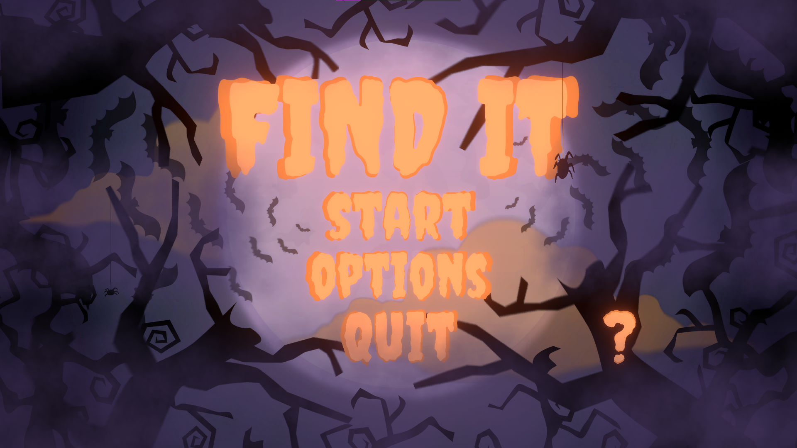
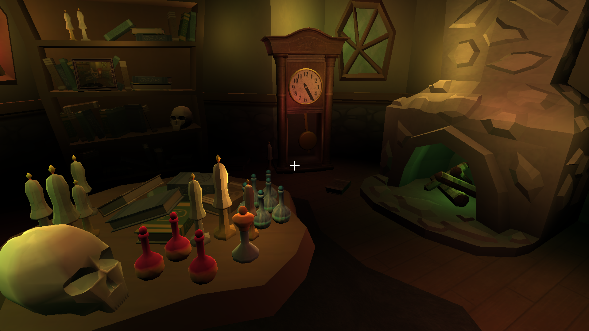

find it
A 3D first‑person escape room game developed in a team of four students as part of a university game development course. The story takes place on Halloween night and follows a high‑school student from a wizarding family who is invited to explore his late grandmother’s enchanted house to claim a mysterious inheritance. The core gameplay focuses on solving environmental puzzles to reach the final room and obtain the prize, while optional collectibles on each level unlock a bonus stage for completionist players.

Many of the objects in the game were downloaded from places offering free game resources, including the Unity Asset Store. Each member of the group was involved in level design, creating logic puzzles and gameplay programming. I was responsible for organizing our work and meetings, overseeing project development and deadlines, and supporting other team members whenever they encountered problems. I also handled music and sound design, game‑progress data saving, menu and gameplay logic, as well as implementing additional scripts and creating some graphic assets in Blender.
